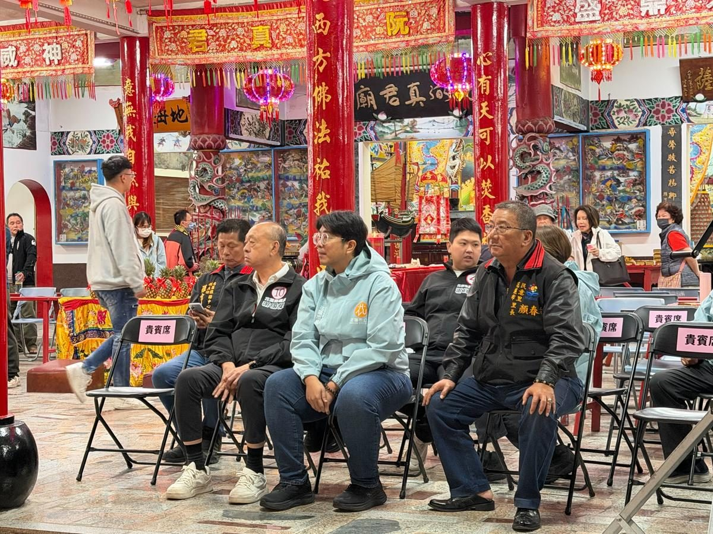
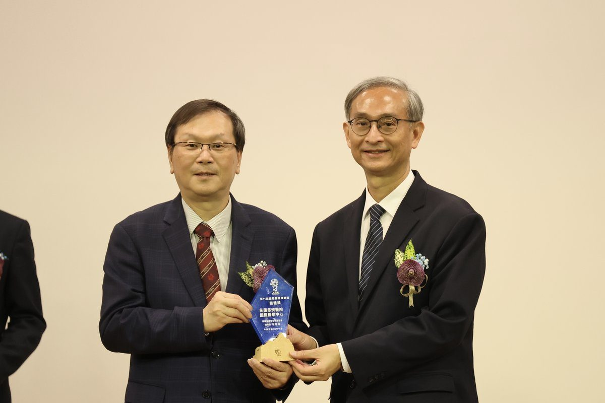
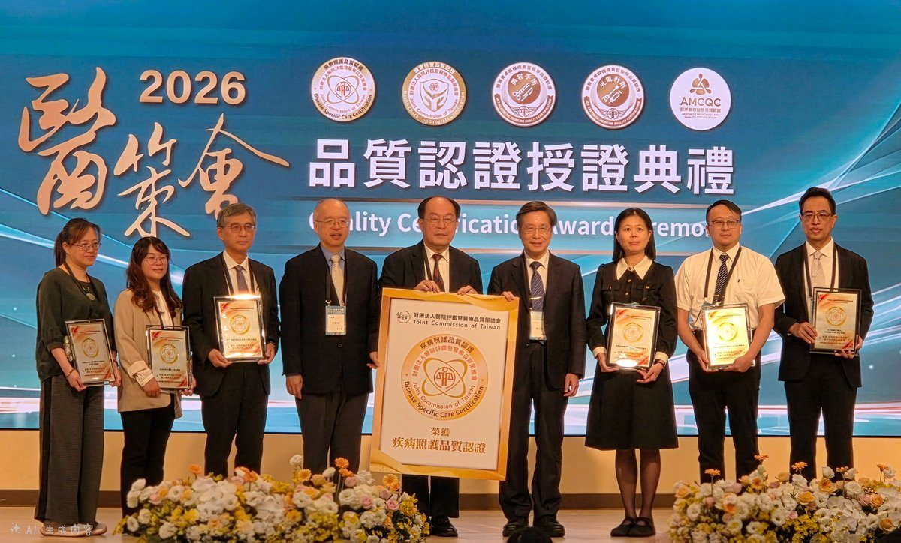
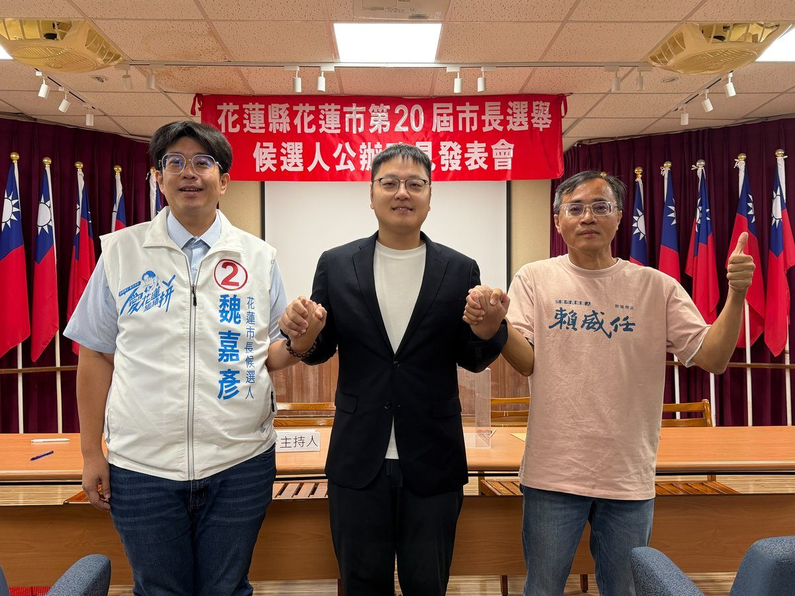
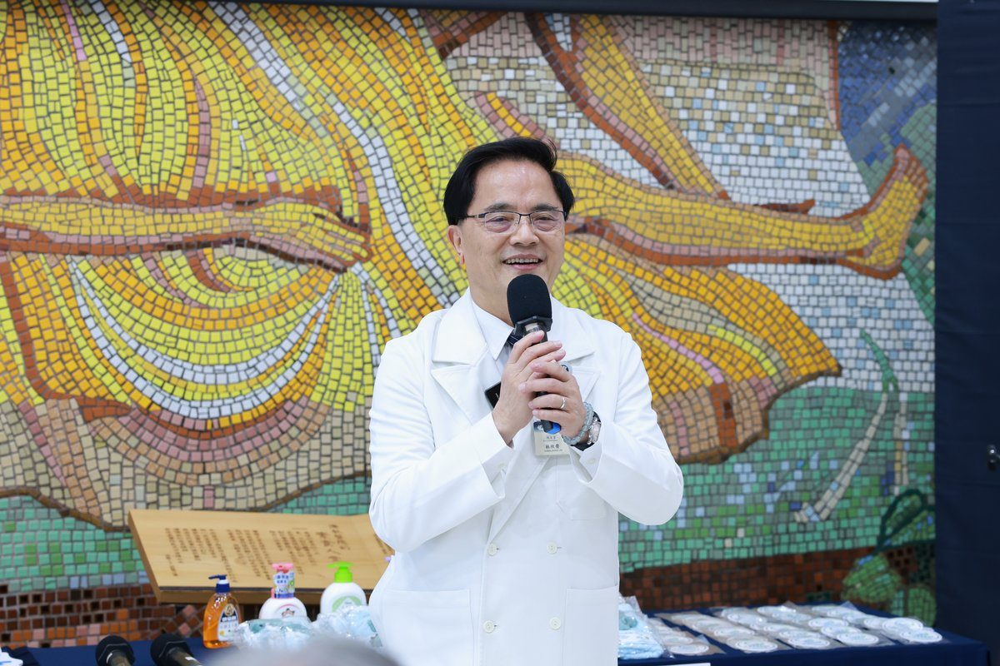
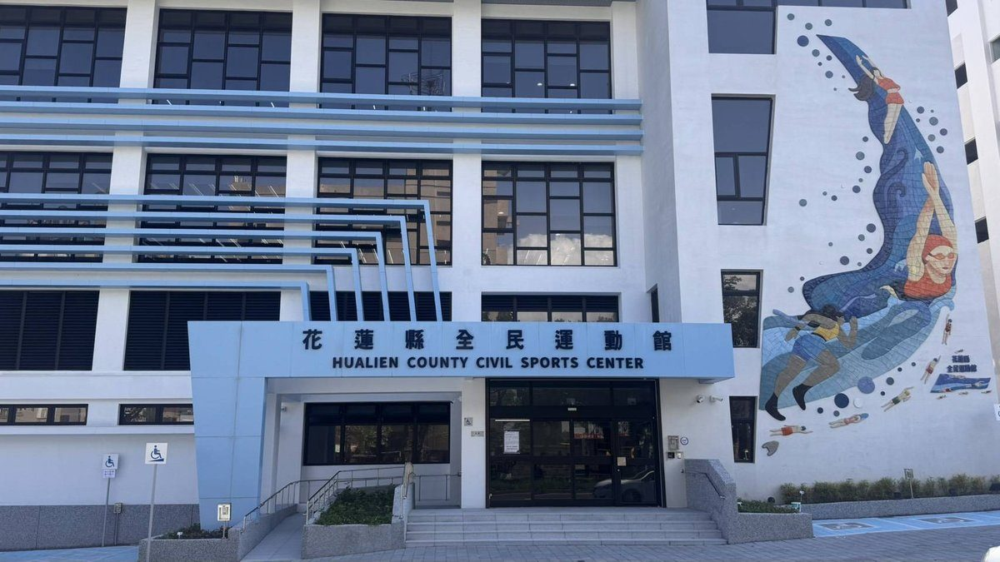

花64線彎道改善獲金質獎 土木二級唯一優等肯定
花蓮縣政府推動花64線2k+000至22k+500彎道改善及道路安全提升工程（第二期），榮獲行政院公共工程委員會第26屆公共工程金質獎品質優良獎「優等」，是土木類第二級全組唯一最高等第，頒獎典禮12月2日舉行，展現偏鄉交…
閱讀全文 →花蓮縣政府推動花64線2k+000至22k+500彎道改善及道路安全提升工程（第二期），榮獲行政院公共工程委員會第26屆公共工程金質獎品質優良獎「優等」，是土木類第二級全組唯一最高等第，頒獎典禮12月2日舉行，展現偏鄉交…
閱讀全文 →
花蓮市公所20日晚間在大陳社區舉辦大陳文化節「裊裊馨香繫海島．尋味大陳逛好市」系列活動，迎接農曆十月十三日真君壽誕，散居各地的大陳遊子返鄉祝壽。市長魏嘉彥偕主任秘書翁美華、所長宋瑜華出席，承天文化藝陣與台北木柵文心會踩街…
閱讀全文 →
一場海外義診結束後，病人的後續照顧該怎麼辦？2024年，花蓮慈濟醫院醫療團隊前往菲律賓義診時，將一位疑似罹患血液疾病的民眾，轉介給曾經來臺接受訓練的菲律賓醫師，讓跨國醫療人才培育的成果，實際運用在當地醫療服務。這樣的醫療…
閱讀全文 →
花蓮慈濟醫院「腦中風中心」通過醫策會疾病照護品質再認證，「冠狀動脈疾病團隊」也以救心成果獲肯定。院方2025年收治693名腦中風病患，更是全花蓮縣唯一24小時執行動脈內取栓術的醫院，在山海之間守護東部鄉親的腦血管與心血管…
閱讀全文 →
台灣區藝品禮品輸出業同業公會一行逾百人，19日由理事長林孟盛率團來到花蓮，展開兩天一夜的會員旅遊，走訪多處特色景點，以實際行動支持花蓮觀光。花蓮市長魏嘉彥今（20）日上午特地前往美侖大飯店，向即將結束旅程的訪團表達歡迎與…
閱讀全文 →
花蓮市立幼兒園昨(19)日前選出第28屆家長委員共22名，花蓮市長魏嘉彥前往幼兒園頒發當選證書。魏市長表示，家長會的支持是教育重要推手，期盼未來一起攜手同心，為學校校務發展與學生健康成長而努力。…
閱讀全文 →
吉安鄉立幼兒園今（20）日於校園辦理「場所消防防護演練」，結合吉安婦宣大隊及消防局吉安分隊，帶領100餘位幼兒透過情境短劇、防火宣導、煙霧體驗及實際滅火操作，學習正確防火觀念與火災應變技巧，讓消防安全教育從小扎根。…
閱讀全文 →
新城警分局富世派出所員警11月10日晚間行經臺8線185公里處，攔查一輛後車斗違規載人的自小貨車，發現陳姓駕駛神情恍惚，毒品唾液快篩呈甲基安非他命陽性，車內查獲安非他命及海洛因各1包，依道路交通管理處罰條例新制開罰15萬…
閱讀全文 →
花蓮市選務作業中心今（19）日在花蓮市公所簡報室舉辦第二十屆市長選舉公辦政見發表會，3名候選人全數到場，依抽籤順序各以15分鐘闡述參選理念及施政主張。選務作業中心提醒，11月28日地方公職人員選舉與全國性公民投票案第22…
閱讀全文 →
抗生素不是萬靈丹！花蓮慈濟醫院響應世界抗生素週，院長林欣榮帶領醫護宣誓謹慎用藥，藥師黃靖惟說明「四不一要」原則，提醒感冒、喉嚨痛不一定是細菌感染，務必遵照醫囑完成療程。…
閱讀全文 →
花蓮市原住民產業文化觀光協會在花蓮市公所指導下開辦月桃編織籃研習課程，市長魏嘉彥18日前往原住民文化歷史館關心，感謝協會推廣部落傳統手藝。課程自11月14日至28日共五堂，十五名家政班員及協會成員從備料學起，親手編出屬於…
閱讀全文 →
吉安鄉立幼兒園連兩年在全國中小學客家藝文競賽東區初賽拿下客語戲劇類特優，12月將再度進軍全國總決賽。15位跨齡幼兒同台演出，鄉長游淑貞期勉孩子把自信帶上全國舞台。…
閱讀全文 →第 47 期・11/20 – 11/26 本週運勢精華指南。🌌 本週星象提示：11/22（日）太陽正式進入射手座，帶來開闊視野與向外探尋的動力；11/24（二）深夜 22:53 迎來雙子座滿月。前兩週講開的話、釐清的帳，…
閱讀全文 →
花蓮慈濟醫院11日啟用「沉浸式未來教室」，以三面高規格投影與環繞音效重建急診現場。醫護人員不必配戴VR頭盔，就能在高度擬真的情境中反覆演練急重症處置與團隊資源管理，讓教科書知識與臨床實務接軌；院方另完成三場工作坊培育種子…
閱讀全文 →
花蓮縣全民運動館自11月24日起展開為期7天試營運，每天上午10時到晚間8時全館免費體驗，12月1日舉行開幕典禮後正式營運，場館位於花蓮市民權路66號。…
閱讀全文 →
「大山大海‧花現未來」花蓮永續風格展在花蓮縣運動休閒園區登場，以在地生物多樣性結合智慧科技互動，並設計7款專屬動物IP，開展以來吸引海內外觀眾造訪，展期到11月21日，線上開放預約團體導覽與工作坊。…
閱讀全文 →
天氣逐漸轉冷，花蓮市長魏嘉彥18日偕同清潔隊長吳慶展在國裕里的資源回收站，為全市45位資源回收個體戶各送上一床棉被，感謝他們長年穿梭大街小巷協助資源回收、讓資源循環再利用，也提醒外出作業時留意往來車輛、穿著亮色衣物提高辨…
閱讀全文 →保健食品該飯前還是飯後吃？花蓮慈濟醫院營養師鄭穎倢說明魚油、鈣片、鐵劑與益生菌的正確吃法，並提醒吃藥別配茶、咖啡與果汁，均衡飲食才是健康基礎。…
閱讀全文 →
衛生福利部舉辦115年度全國社區發展金卓越社區表揚典禮，花蓮縣吉安鄉稻香社區發展協會以女力培力、數位平權與客庄文化傳承等成果，榮獲績效組「服務與創新獎」，鄉長游淑貞肯定社區長期深耕。…
閱讀全文 →
高齡換照年齡由75歲下修至70歲，約128萬人適用；70至75歲體檢合格並完成2小時講習換照至75歲，75歲以上另須通過認知功能測驗，緩衝期至2028年5月31日。…
閱讀全文 →